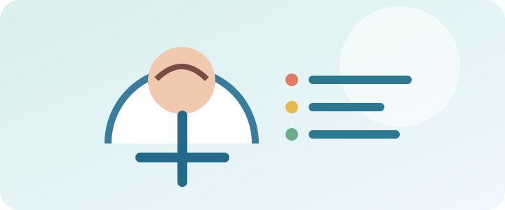

第五屆台灣神經血管外科與介入治療醫學會理事長 (TSNIS)
專長領域：腦動脈瘤/腦瘤開顱手術、急性缺血性腦中風機械取栓、顱內動脈瘤微創手術、動靜脈畸形處置、脊椎手術、常壓性腦水腰椎分流手術
致力於提供最先進的腦血管介入手術、顯微開顱與複合式手術，守護患者腦與脊椎健康。

臉歪(Face)、手軟(Arm)、大舌頭(Speech)、記下時間(Time)，把握黃金救援期。
解析未破裂動脈瘤之追蹤策略、開顱夾閉與微創栓塞手術選擇。
認識頸動脈斑塊形成原因，血管超音波檢查與支架置放手術須知。
收錄崔源生醫師（Tsuei YS）於國際知名神經外科及腦血管醫學期刊發表之研究著作與論文清單。